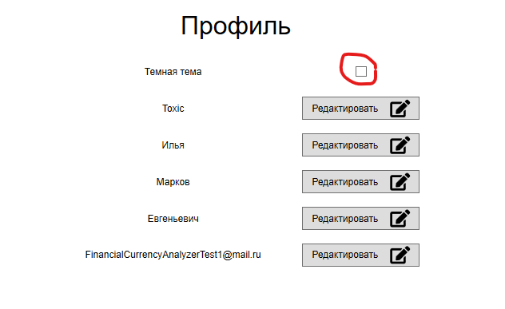

Для смены цвветовой темы пользовательского интерфеса необходимо войти в аккаунт. После входа перейти на вкладку -> "Аккаунт" и найти там параметр "Темная тема" и выбрать его.
В результате цветовая тема должна примениться ко всему приложению и при последующем входе в приложение сохраняться.